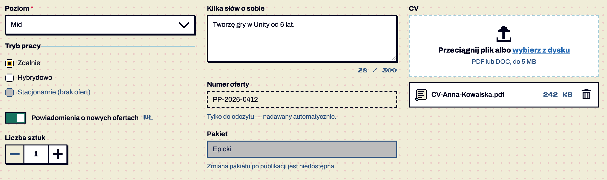
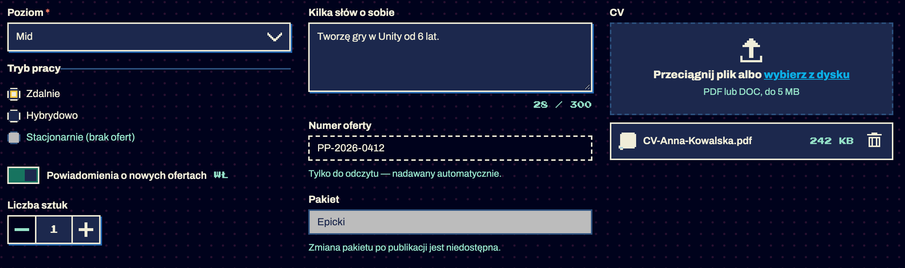

Komponenty / Pola formularza
Pola formularza i ich stany
testowy Lista wyboru, radio, przełącznik, pole wielowierszowe, licznik −/+, plik · od 1.7 — brakuje: użycie na 2 ekranach, test z czytnikiem
testowy Błąd, ostrzeżenie, podpowiedź, zablokowane, tylko do odczytu · od 1.6 — brakuje: użycie na 2 ekranach, test z czytnikiem
Uzupełnienie panelu filtrów (K08): lista wyboru, radio, przełącznik, pole wielowierszowe z licznikiem znaków, licznik −/+, wgrywanie pliku oraz stany pola: wymagane, błąd, ostrzeżenie, podpowiedź, zablokowane, tylko do odczytu. Wybór: radio — 2–5 wykluczających się opcji widocznych naraz; lista wyboru — więcej opcji albo mało miejsca; checkbox — opcje niezależne; przełącznik — ustawienie działające od razu (bez „Zapisz”). Potwierdzone w dokumentacji S01 §6.13–6.14.


Anatomia i komponenty składowe
| Część / rola | Wymagana / opcjonalna | Składnik / źródło | Co można zmienić / status |
|---|---|---|---|
| etykieta nad polem | wymagana | .field label 14/700 | Potwierdzone w dokumentacji |
| pole | wymagane | input / select w .select / textarea | ramka 2 px, cień 2 px Potwierdzone w dokumentacji |
| gwiazdka wymaganego | opcjonalna | .req aria-hidden + required | Potwierdzone w dokumentacji |
| podpowiedź | opcjonalna | .field-hint | Potwierdzone w dokumentacji |
| błąd / ostrzeżenie | warunkowe | .field-error / .field-warning | skrypt tworzy sam Potwierdzone w dokumentacji |
| licznik znaków | opcjonalny | .field-count | Potwierdzone w dokumentacji |
Warianty i zastosowanie
| Oś | Wartość | Kiedy użyć | Co się zmienia | Ograniczenia / status / źródło |
|---|---|---|---|---|
| pole | lista wyboru | wiele opcji | pikselowa strzałka i-chevron-down, 40 px | Potwierdzone w dokumentacji |
| pole | radio | 2–5 opcji | pikselowe koło 18 px, zaznaczenie = kwadrat 6 px z żółtą obwódką | Potwierdzone w dokumentacji |
| pole | przełącznik | ustawienie natychmiastowe | tor 44×24, suwak 16 px, napis WŁ/WYŁ | Potwierdzone w dokumentacji |
| pole | wielowierszowe | opis, wiadomość | min. 96 px, licznik „45 / 300” | Potwierdzone w dokumentacji |
| pole | licznik −/+ | liczba sztuk | przyciski 36 px, na granicy aria-disabled | Potwierdzone w dokumentacji |
| pole | plik | CV, logo | strefa z przerywaną ramką, lista plików ze zwojem i koszem | Potwierdzone w dokumentacji |
| stan | błąd | nie można wysłać | ramka i cień --danger + „!” + tekst | Potwierdzone w dokumentacji |
| stan | ostrzeżenie | można wysłać, warto poprawić | ramka --status-warning + trójkąt | Potwierdzone w dokumentacji |
| stan | zablokowane | nie do zmiany teraz | szare, bez cienia + zdanie dlaczego | Potwierdzone w dokumentacji |
| stan | tylko do odczytu | wartość do skopiowania | tło papieru, ramka przerywana | Potwierdzone w dokumentacji |
Zachowanie, treści i lokalizacja
Błąd po opuszczeniu pola i przy wysłaniu, nigdy w trakcie pisania (K24). Plik: przeciągnij lub wybierz; za duży lub w złym formacie → „Nie dodano: plik.pdf — plik większy niż 5 MB.” Potwierdzone w dokumentacji. Licznik znaków aktualizuje tekst z opóźnieniem 0,6 s, żeby czytnik nie ogłaszał każdego znaku Potwierdzone w dokumentacji.
Zalecane i niewskazane
| Zalecane — przykład | Niewskazane — przykład | Powód / status / źródło |
|---|---|---|
| komunikat w kolorze tekstu z „!” | czerwony tekst błędu | czerwony na papierze ma 4,2:1 Potwierdzone w dokumentacji |
| przełącznik „Powiadomienia o nowych ofertach” | przełącznik w formularzu z „Zapisz” | przełącznik działa od razu — w formularzu checkbox Potwierdzone w dokumentacji |
| zablokowane + zdanie dlaczego | szare pole bez wyjaśnienia | Potwierdzone w dokumentacji |
| radio dla 3 trybów pracy | lista wyboru dla 2 opcji | radio pokazuje wszystkie opcje naraz Rekomendacja |
Tokeny i style
| Zastosowanie | Token | Tryb / wariant | Wartość | Źródło | Status |
|---|---|---|---|---|---|
| ramka błędu | --danger | #D9214F / #F27961 | S02 | Potwierdzone w dokumentacji | |
| ostrzeżenie | --status-warning | #E45C10 | S02 | Potwierdzone w dokumentacji | |
| zablokowane | --disabled-* | #BCBCBC / #1C284D / #2D5280 | S02 | Potwierdzone w dokumentacji | |
| przełącznik włączony | --action | #17735F | S02 | Potwierdzone w dokumentacji |
Wymiary, odległości i układ
| Elementy / krawędzie | Wariant | Wartość / relacja | Token | Reguła / źródło / dokładność |
|---|---|---|---|---|
| pole | — | padding 8×10, lista 40 px | — | Potwierdzone w dokumentacji |
| etykieta ↔ pole | — | 6 px | — | Potwierdzone w dokumentacji |
| pole ↔ komunikat | — | 8 px | — | Potwierdzone w dokumentacji |
| radio / checkbox | — | 18 / 16 px, odstęp 6 px | — | Potwierdzone w dokumentacji |
Typografia
| Rola tekstu | Styl | Font / weight | Rozmiar | Interlinia | Tracking | Kolor / zachowanie / status |
|---|---|---|---|---|---|---|
| etykieta | — | Archivo 700 | 14 | — | — | Potwierdzone w dokumentacji |
| komunikat | — | Archivo 600 | 13 | 18 | — | --ink (nie czerwony) Potwierdzone w dokumentacji |
| licznik / WŁ | pixel-xs | Press Start 2P | 10 | — | — | Potwierdzone w dokumentacji |
Przykład na żywo
Ta sama sekcja co w examples/komponenty.html — działa na systemie 1.11.0. Przełącz motyw w nagłówku, żeby zobaczyć tryb ciemny.
Pola formularza
Lista wyboru, radio (pikselowe koło), przełącznik z napisem WŁ/WYŁ, pole wielowierszowe z licznikiem znaków, licznik −/+, wgrywanie pliku (CV), pole zablokowane i tylko do odczytu.
Tylko do odczytu — nadawany automatycznie.
Zmiana pakietu po publikacji jest niedostępna.
Kod przykładu
<section class="ex" id="formularze" aria-labelledby="h-form">
<h2 id="h-form">Pola formularza</h2>
<p>Lista wyboru, radio (pikselowe koło), przełącznik z napisem WŁ/WYŁ, pole wielowierszowe z licznikiem znaków, licznik −/+, wgrywanie pliku (CV), pole zablokowane i tylko do odczytu.</p>
<div class="grid3">
<div class="stack" style="display:grid;gap:16px">
<div class="field"><label for="f-lvl">Poziom <span class="req" aria-hidden="true">*</span></label>
<div class="select"><select id="f-lvl" required><option>Junior</option><option selected>Mid</option><option>Senior</option><option>Lead</option></select></div></div>
<fieldset style="margin:0"><legend>Tryb pracy</legend>
<label class="radio"><input type="radio" name="tryb-r" value="zdalnie" checked>Zdalnie</label>
<label class="radio"><input type="radio" name="tryb-r" value="hybrydowo">Hybrydowo</label>
<label class="radio"><input type="radio" name="tryb-r" value="biuro" disabled>Stacjonarnie (brak ofert)</label>
</fieldset>
<button class="switch" type="button" role="switch" aria-checked="true"><span class="switch-track" aria-hidden="true"></span>Powiadomienia o nowych ofertach<span class="switch-state" aria-hidden="true">WŁ</span></button>
<div><span class="k" style="display:block;margin-bottom:6px;font:700 14px var(--font-sans)" id="qty-l">Liczba sztuk</span>
<div class="stepper"><button type="button" data-step="-1" aria-label="Mniej sztuk"><span class="icon i-minus" aria-hidden="true"></span></button><input type="number" min="1" max="9" value="1" aria-labelledby="qty-l"><button type="button" data-step="1" aria-label="Więcej sztuk"><span class="icon i-plus" aria-hidden="true"></span></button></div></div>
</div>
<div class="stack" style="display:grid;gap:16px">
<div class="field"><label for="f-about">Kilka słów o sobie</label><textarea id="f-about" maxlength="300" data-count="f-about-n" aria-describedby="f-about-n">Tworzę gry w Unity od 6 lat.</textarea><p class="field-count" id="f-about-n"></p></div>
<div class="field"><label for="f-id">Numer oferty</label><input id="f-id" type="text" value="PP-2026-0412" readonly><p class="field-hint">Tylko do odczytu — nadawany automatycznie.</p></div>
<div class="field"><label for="f-pkg">Pakiet</label><input id="f-pkg" type="text" value="Epicki" disabled><p class="field-hint">Zmiana pakietu po publikacji jest niedostępna.</p></div>
</div>
<div class="field"><span style="display:block;margin:0 0 6px;font:700 14px var(--font-sans)" id="cv-l">CV</span>
<label class="upload" data-max-mb="5"><input type="file" id="f-cv" accept=".pdf,.doc,.docx" aria-labelledby="cv-l" aria-describedby="cv-h">
<span class="icon icon-lg i-upload" aria-hidden="true"></span><span class="upload-title">Przeciągnij plik albo <u>wybierz z dysku</u></span><span class="upload-hint" id="cv-h">PDF lub DOC, do 5 MB</span></label>
<p class="field-error" data-upload-error hidden></p>
<ul class="file-list" data-files-for="f-cv"></ul></div>
</div>
</section>Właściwości i atrybuty
| Właściwość / atrybut | Typ | Wartości pokazane / opisane | Domyślna | Efekt i zastosowanie | Zależności / status / źródło |
|---|---|---|---|---|---|
| required | boolean | — | nie | walidacja + gwiazdka | Potwierdzone w dokumentacji |
| maxlength + data-count | liczba + id | 300 | — | licznik znaków | Potwierdzone w dokumentacji |
| min / max | liczba | licznik, widełki | — | zakres | Potwierdzone w dokumentacji |
| accept + data-max-mb | tekst / liczba | .pdf,.doc / 5 | — | typ i rozmiar pliku | Potwierdzone w dokumentacji |
| role=switch + aria-checked | boolean | true/false | false | przełącznik | Potwierdzone w dokumentacji |
| data-warn-empty | tekst | treść ostrzeżenia | — | ostrzeżenie dla pustego | Potwierdzone w dokumentacji |
| disabled / readonly | boolean | — | nie | stan | Potwierdzone w dokumentacji |
Specyfikacja (design.md §6.14)
| Pole | Klasa / atrybuty | Specyfikacja |
|---|---|---|
| Lista wyboru | .field > .select > select | jak pole tekstowe, wysokość 40 px, pikselowa strzałka i-chevron-down po prawej |
| Radio | .radio > input[type=radio] | 18 px, pikselowe koło (schodkowe narożniki 4 px), zaznaczenie = kwadrat 6 px --ink z żółtą obwódką |
| Przełącznik | button.switch[role=switch][aria-checked] + .switch-track + .switch-state | tor 44×24, suwak 16 px skokowo; włączony = tor --action; napis WŁ / WYŁ w pixel-foncie (stan nie tylko kolorem). Zmiana działa od razu — w formularzu z „Zapisz” użyj checkboxa |
| Pole wielowierszowe | .field textarea + maxlength + data-count → .field-count | min. 96 px, resize: vertical; licznik „45 / 300” w pixel-foncie, czerwony przy ≤ 5% |
| Licznik −/+ | .stepper z button[data-step] i input[type=number][min][max] | przyciski 36 px; na granicy zakresu aria-disabled |
| Plik | label.upload[data-max-mb] > input[type=file][accept] + ul.file-list[data-files-for] + p.field-error[data-upload-error] | strefa z przerywaną ramką, ikona i-upload, „Przeciągnij plik albo wybierz z dysku”; lista plików z s-scroll, rozmiarem i usuwaniem i-trash; błąd typu/rozmiaru pod strefą |
| Wymagane | <span class="req" aria-hidden="true">*</span> w etykiecie + required | gwiazdka w --danger |
| Zablokowane | :disabled | tło --disabled-bg, ramka --disabled-line, bez cienia + zdanie dlaczego w .field-hint |
| Tylko do odczytu | [readonly] | tło --paper, ramka przerywana, bez cienia; wartość można zaznaczyć i skopiować |
Cel: WCAG 2.2 AA. Statyczne materiały i testy automatyczne w Chrome nie dowodzą zgodności — miejsca oznaczone „Do testu we wdrożeniu” wymagają testu z czytnikiem ekranu (design.md §0.6).
| Obszar | Ustalenie lub wymaganie | Dowód / status | Kryterium / wzorzec | Jak sprawdzić |
|---|---|---|---|---|
| etykiety | label for / aria-labelledby; fieldset + legend dla radio | Potwierdzone w dokumentacji | WCAG 1.3.1, 3.3.2 | czytnik |
| błąd | aria-invalid + aria-describedby | Potwierdzone w dokumentacji | WCAG 3.3.1 (A), 3.3.3 (AA) | czytnik Do testu we wdrożeniu |
| przełącznik | role=switch, stan także napisem | Potwierdzone w dokumentacji | APG Switch; WCAG 1.4.1 | czytnik Do testu we wdrożeniu |
| plik | natywny input w strefie, fokus na strefie | Potwierdzone w dokumentacji | WCAG 2.1.1 | klawiatura |
| stan nie tylko kolorem | błąd: ikona + tekst; ostrzeżenie: trójkąt + tekst | Potwierdzone w dokumentacji | WCAG 1.4.1 | — |
Źródła
S01 §6.13–6.14; S03 ui-controls.js; S20 (sekcja Formularze); S21.